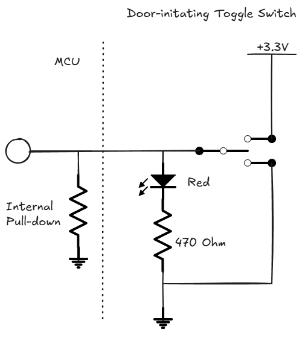
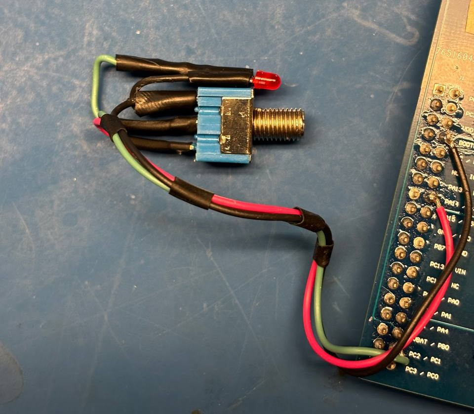
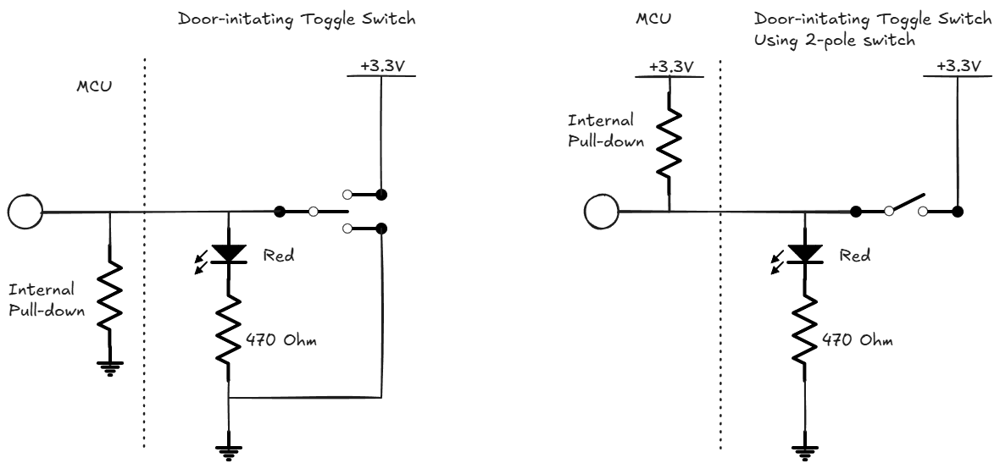
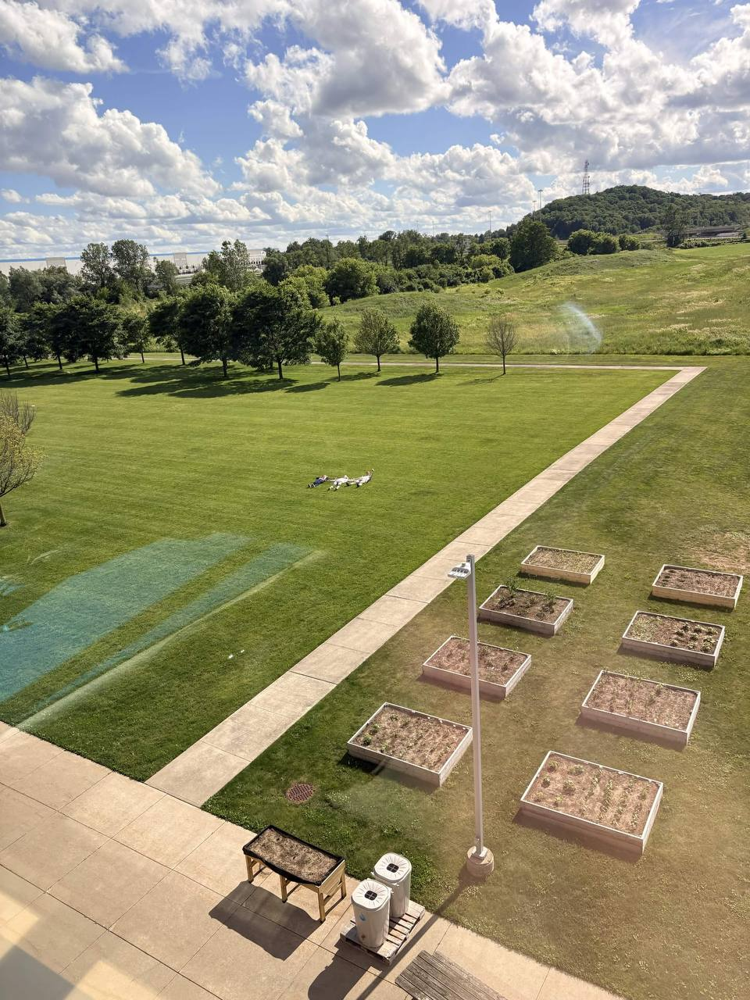

Nick brought final printed parts for phase 1 of the project. Nick and I worked on replacing the parts and finalizing the assembly. We found that drag chain catches on FC2 Mini USB cable/connector on the way down from the upper-most position. To solve this, we agreed on installing a cardboard panel along the left side of the elevator to prevent the drag chain from going out of bounds there.
I soldered and installed the door switch to the elevator cabin. The initial plan utilized a 2-pole toggle switch I had left over from a prior project. I tested the switch as I remembered that batch wasn't particularly reliable, and some toggle switched were stuck in a single position. I drew up a connection diagram for wiring the switch and an indicator LED.

However, after soldering and installing the switch, it got stuck in open position after just 1 toggle. In an attempt to get it unstuck with pliers, the lever of the switch broke off. Incredible material properties of chineesium were demonstrated again.

Fortunately, Nick had a 1-pole replacement switch on hand.
In order to use this switch, I redrew the circuit diagram and
expanded the mounting hole of the toggle switch mount
(003-007-01-Toggle Switch Mount).

Today, our team focused on completing SENG73000 assignment.
As part of the assignment, we also recorded a video introducing
our team and the project. This video can be seen on the
About page. It is also attached below:
The assignment proved to be quite exhausting. In order to stay sane while doing the assignment, one of the team members proposed going outside and "touching grass". Having pulled an all-nighter that day, we listened to our wise team member.
